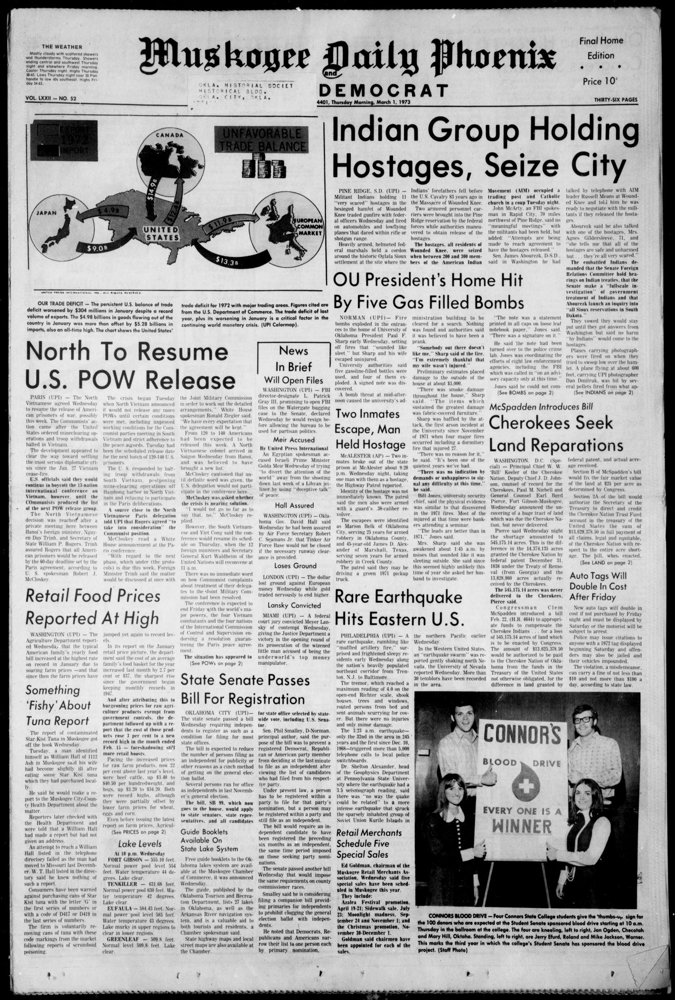

HN HN-691 · March 1, 1973 · Civil Rights & Social Change > Indigenous Peoples & Rights > Sovereignty
Source: Banner-Graphic, p. 12 — original page.
Report: “Indians Take Over S.D. Town†described approximately 200 American Indian Movement participants at Wounded Knee and reported claims that some residents were held as hostages while occupiers demanded talks about grievances.
Assessment: The occupation is established; the page's precise numbers and assertions about hostages are initial reported claims. The 1973 standoff reflected wider disputes over tribal governance and federal policy. It was not the 1890 Wounded Knee massacre, though the location deliberately evoked that history. Follow-up open: full negotiation and court records.
Identity-review candidate peers: HN-692:Algorithmic
Authentic images retrieved from Gateway to Oklahoma History (Oklahoma Historical Society). Article crops are located using the archive's own OCR word coordinates and rendered at native crop resolution; article clips are assembled from the archive's own article-block images; page scans are reduced-size access renditions. No images were generated, mocked, or retouched.

Not yet acquired. Queued for provider-specific acquisition testing (see source-acquisition manifest).
URL (preserved verbatim): https://newspapers.library.in.gov/?a=d&d=BG19730301-01.1.12
Saved research report: Historical_Newspaper_Event_Research_678-702_2026-10-23.md
Evidence note: A newspaper report means a historical publication made a claim; it does not establish that claim as fact. Contemporary reporting is separated from later scholarly context and our own assessment.